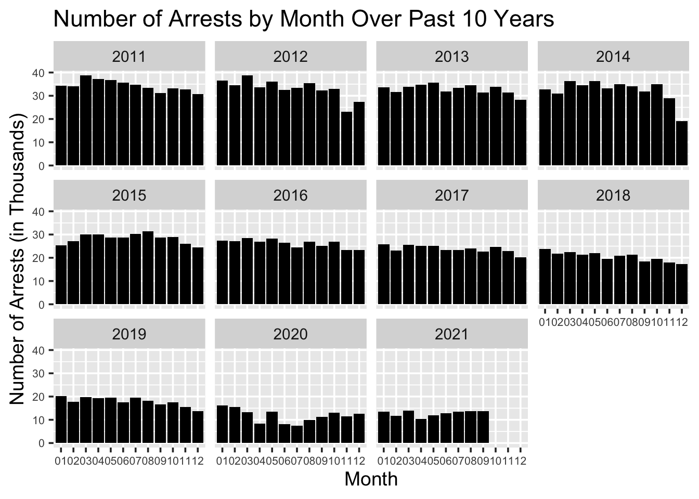
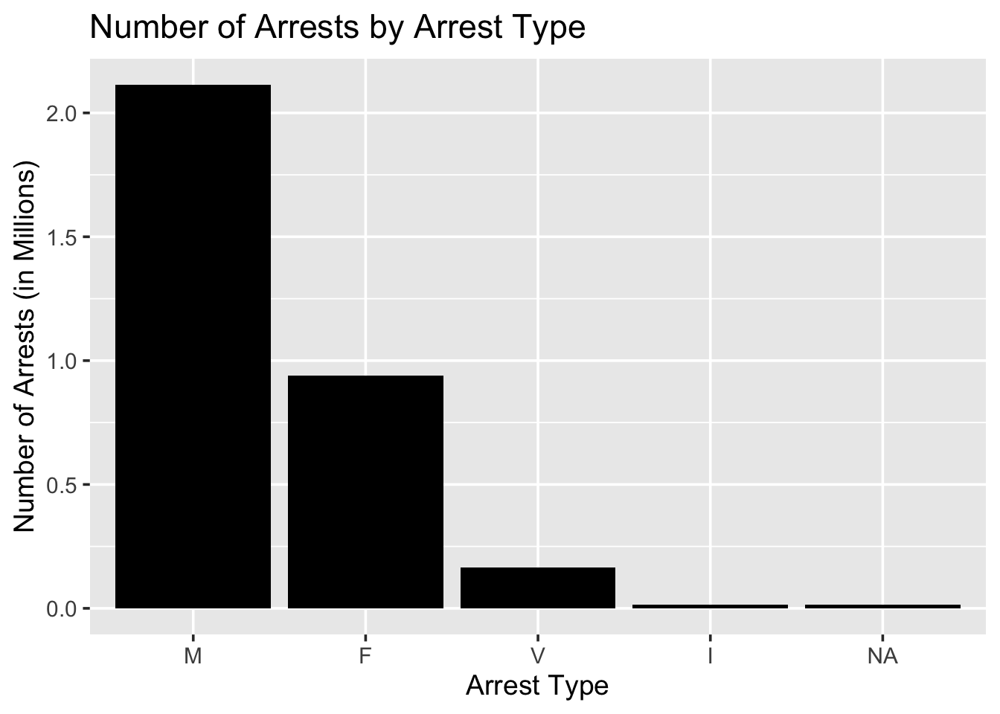
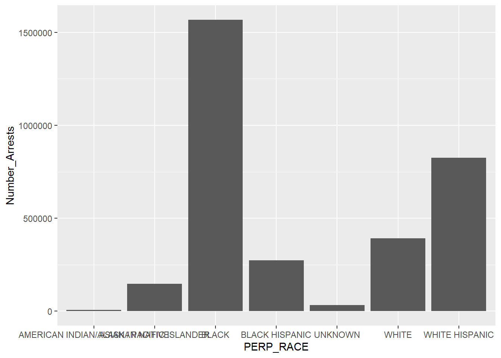
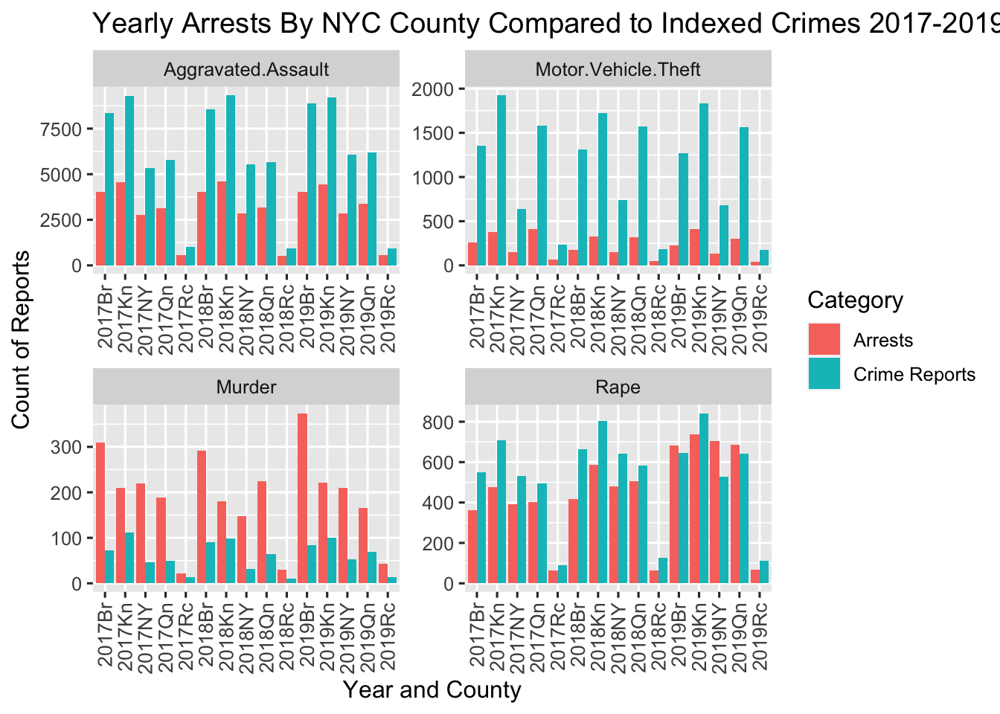

Chapter 5 Results
In this section, we will be sharing the results of exploratory analysis with our data. We will be focusing on the findings that we found most interesting during this process while also trying to provide some insight into some of the questions of interest mentioned at the beginning of this project. To start, we made some basic bar charts to get a better understanding of the arrests occuring in New York City. First, we looked at how the number of arrests has changed over the past 10 years.
nyc_arrests_year <- nyc_arrests_combined %>%
mutate(ARREST_YEAR = format(ARREST_DATE, format = "%Y")) %>%
group_by(ARREST_YEAR) %>%
summarize(Number_Arrests = n()) %>%
mutate(Number_Arrests = Number_Arrests/100000)
ggplot(data = nyc_arrests_year, aes(x = ARREST_YEAR, y = Number_Arrests)) + geom_col() +
labs(title = "Number of Arrests by Year",
x = "Year",
y = "Number of Arrests (in Hundred Thousands)")
From the plot above, we can see that the number of arrests has decreased each year for the past 10 years. The decrease in arrests is very significant as well since there were over 400,000 arrests in 2011 while there were under 150,000 arrests in 2020 and just over 100,000 arrests so far in 2021. It seems likely that the impact of COVID-19 has helped decrease the number of arrests in 2020 and 2021, especially in 2020 with so many things being shutdown. It will be interesting to see if the number of arrests in 2021 is larger than the 2020 which would be a deviation from the trend of arrests going down. While this plot indicates progress in terms of safety in New York, it will be interesting to see if the number of crimes has dropped significantly as well. If arrests are going down, but crimes are not, then this would indicate that the city is not actually safer, but instead people are getting away with more crimes. We were also interested in looking at the distribution of arrests by month to see if this varied throughout the year. From the plot below, we see that there doesn’t seem to be significant variation from month to month in terms of arrests over the past 10 years.
nyc_arrests_biggest_months <- nyc_arrests_combined %>%
mutate(ARREST_YEAR = format(ARREST_DATE, format = "%Y"),
ARREST_MONTH = format(ARREST_DATE, format = "%m")) %>%
group_by(ARREST_MONTH, ARREST_YEAR) %>%
summarize(Number_Arrests = n()) %>%
mutate(Number_Arrests = Number_Arrests/1000)
ggplot(data = nyc_arrests_biggest_months, aes(x = ARREST_MONTH, y = Number_Arrests)) + geom_col() + facet_wrap(~ ARREST_YEAR) +
labs(title = "Number of Arrests by Month Over Past 10 Years",
x = "Month",
y = "Number of Arrests (in Thousands)")
One small pattern that we can see from this plot is that the number of arrests seems to drop off a little in December, with December 2014 being the most extreme example. The reasoning for this drop off is unclear, but it could potentially be related to the holiday season. It will be interesting to compare to the number of crimes in December to see if people commit fewer crimes at the end of the year. Another aspect of this plot that we found interesting is that the number of arrests really drops off in 2020 once COVID hit. April, June, and July all had very low arrest totals and this was likely due to the fact that most people were quarantining and not going out much.
We also want to look at the types of arrests that are occurring in New York City. The three types of arrests according to the data dictionary are felonies, misdemeanors, and violations. A bar plot showing how common each arrest type has been over the past 10 years is below.
nyc_arrests_type <- nyc_arrests_combined %>%
group_by(LAW_CAT_CD) %>%
summarize(Number_Arrests = n()) %>%
na_if("") %>%
mutate(Number_Arrests = Number_Arrests/1000000)
ggplot(data = nyc_arrests_type, aes(x = fct_reorder(LAW_CAT_CD, Number_Arrests, .desc = TRUE), y = Number_Arrests)) +
geom_col() + labs(title = "Number of Arrests by Arrest Type",
x = "Arrest Type",
y = "Number of Arrests (in Millions)")
From the bar plot above, we can see that misdemeanor is the most common type of arrest in our dataset with over 2 million arrests that were related to misdemeanor charges. Felony is the next most common type of arrest with just under 1 million arrests while violations only account for around 200,000 arrests. There is also a small portion of arrests classified as I, but it is not exactly clear from the data dictionary what that stands for. There were also a small amount of arrests that did not have a LAW_CAT_CD, so these were categorized as NA in our plot.
5.1 Arrests Compared to Crime
Earlier in this analysis, we mentioned how arrests can be considered a proxy for crime, but that this equivalence is not perfect. To begin, we will put this assumption to the test by comparing our data on arrests in New York City to our data on reported NYC crime. In the below visuals, we see reported crimes of several categories, paired with their associated arrests. Columns are grouped by their year and associated county (NY for New York, Kn for Kings, Rc for Richmond, Br for Brooklyn, and Qn for Queens).

There are some very interesting things to be observed here. First, arrests do not map exactly to reported crimes. Aggravated Assault, Murder, and Motor Vehicle Theft all present cases where the number of arrests does not exactly match the associated number of crimes reported. Rape seems the exception, with arrest counts closer to crime reports. Next, it is interesting to note that the degree to which arrests differ from crime reports, and the direction of the mismatch, varies. In the case of motor vehicle theft, crime reports outpace arrests by a large degree. This makes sense, considering that many motor vehicle thefts occur when the vehicle owner is not present. Since motor vehicle theft often has the criminal and the victim at different locations during the time of the crime, it is reasonable that it may be harder to make an arrest after the crime, since fewer details may be known about the criminal. One confusing relation is the relation between murder arrests and reports. It seems counter-intuitive that the number of arrests made would exceed the number of murders committed. Perhaps this can be attributed to arrests made before the actual criminal was determined. Once again, we have a case where the victim cannot report effectively regarding details of the criminal, but with a crime considered to be more severe. In general, however, arrests seem to exhibit values similar to crime reports. One of the primary lessons from this visual is the understanding that arrest data can serve as a proxy for crime data, but should be recognized as a different metric, and prone to distortion.
nyc_arrests_perp <- nyc_arrests_combined %>%
group_by(PERP_SEX) %>%
summarize(Number_Arrests = n())
ggplot(data = nyc_arrests_perp, aes(x = PERP_SEX, y = Number_Arrests)) + geom_col()
nyc_arrests_perp <- nyc_arrests_combined %>%
group_by(PERP_RACE) %>%
summarize(Number_Arrests = n())
ggplot(data = nyc_arrests_perp, aes(x = PERP_RACE, y = Number_Arrests)) + geom_col()
nyc_arrests_biggest_months <- nyc_arrests_combined %>%
mutate(ARREST_YEAR = format(ARREST_DATE, format = "%Y"),
ARREST_MONTH = format(ARREST_DATE, format = "%m")) %>%
group_by(ARREST_MONTH, ARREST_YEAR) %>%
summarize(Number_Arrests = n())
ggplot(data = nyc_arrests_biggest_months, aes(x = ARREST_MONTH, y = Number_Arrests)) + geom_col() + facet_wrap(~ ARREST_YEAR)
library(parcoords)
nyc_coords <- nyc_arrests_categories_simple %>%
group_by(County) %>%
summarize(Murder = sum(Murder),
Rape = sum(Rape),
Aggravated.Assault = sum(Aggravated.Assault),
Motor.Vehicle.Theft = sum(Motor.Vehicle.Theft))
parcoords(data = nyc_coords, rownames = FALSE, reorderable = TRUE, brushMode = '1D-axes', color = list(
colorBy = "County",
colorScale = "scaleOrdinal",
colorScheme = "schemeCategory10"
),
withD3 = TRUE)5.2 Arrests Related to Marijuana over time
Since 2011, there have been several changes in the legal status of marijuana in New York City, and it is now legalized in the city as of 2021. Prior to this, however, there were many legal events that softened or removed penalties on marijuana-related offenses. Among them are these events:
- November 19th, 2014: Mayor de Blasio launches a policy initiative related to marijuana possession. Under this initiative, individuals in possession of 25 or fewer grams of marijuana are fined, rather than arrested. (https://nypost.com/2014/11/10/nyc-may-stop-making-arrests-for-small-amounts-of-marijuana/)
- July 31st, 2018: The Manhattan District Attorney ends the prosecution of marijuana possession and smoking. (https://www.manhattanda.org/tomorrow-d-a-vance-ends-prosecution-of-marijuana-possession-and-smoking-cases/)
- September 1st, 2018: The NYPD ceases arrests of individuals smoking marijuana, opting instead to issue summonses instead. (https://www.ny1.com/nyc/all-boroughs/news/2018/09/01/nypd-marijuana-enforcement-relaxation-policy-takes-effect-most-marijuana-smokers-to-get-summonses)
- July 29th, 2019: Governor Cuomo signs legislation reducing penalties for marijuana (https://www.forbes.com/sites/lisettevoytko/2019/07/29/new-york-decriminalizes-recreational-marijuana-falls-short-of-governors-goal-to-legalize/?sh=165b0ab4ee70)
- March 31, 2021: Marijuana is legalized in New York State (https://cannabis.ny.gov/marihuana-regulation-and-taxation-act-mrta)
Below is a time series graph depicting marijuana-related arrests, annotated with these events.
nyc_mj_arrests_by_date <- (
nyc_arrests_combined %>%
filter(grepl("MARIJUANA", PD_DESC)) %>%
mutate(ARREST_YEAR = year(ARREST_DATE), ARREST_MONTH = month(ARREST_DATE)) %>%
group_by(ARREST_YEAR, ARREST_MONTH) %>%
summarize(COUNT_OF_ARRESTS = n()) %>%
mutate(month = make_date(year=ARREST_YEAR,month=ARREST_MONTH, day=15))
)
ggplot(nyc_mj_arrests_by_date,aes(x=month,y=COUNT_OF_ARRESTS)) +
geom_line() +
geom_vline(xintercept = make_date(year = 2014,month = 11, day = 19), color = 'red', size = 1.2, alpha = 0.3) +
geom_vline(xintercept = make_date(year = 2018,month = 07, day = 31), color = 'red', size = 1.2, alpha = 0.3) +
geom_vline(xintercept = make_date(year = 2018,month = 09, day = 01), color = 'red', size = 1.2, alpha = 0.3) +
geom_vline(xintercept = make_date(year = 2019,month = 07, day = 29), color = 'red', size = 1.2, alpha = 0.3) +
geom_vline(xintercept = make_date(year = 2021,month = 03, day = 31), color = 'red', size = 1.2, alpha = 0.3)
There are some very interesting observations here. As can be observed, there was a tremendous drop in marijuana arrests after the launch of Mayor de Blasio’s November 19th, 2014 policy initiative. However, this short-term decrease did not last. Though marijuana arrests show a marked decrease after the initiative as compared to before, arrests did see a rebound in 2015. The next largest decline appears to begin around January 2018, though the cause of this decline is not immediately obvious. It may be linked to a more widespread acceptance of marijuana that year, as evident in the commissioning of a study on the legalization of marijuana commissioned by Governor Cuomo that January (https://www.nysenate.gov/newsroom/press-releases/jamaal-t-bailey/marijuana-legalization-impact-assessment-study). Further developments later that year solidify this direction, such as the aforementioned end of prosecution in several boroughs, and the end of arrests for smoking. Unlike the previous decline, this second drop in arrests would not see a rebound, and arrests end entirely after the March 31st, 2021 legalization. The reasons for earlier declines in 2011 and 2012 are not as easy to explain, but it should be noted that 2011 was a high point in marijuana arrests. (https://gothamist.com/news/nyc-still-marijuana-arrest-capital-of-the-world-arrests-rose-again-last-year)